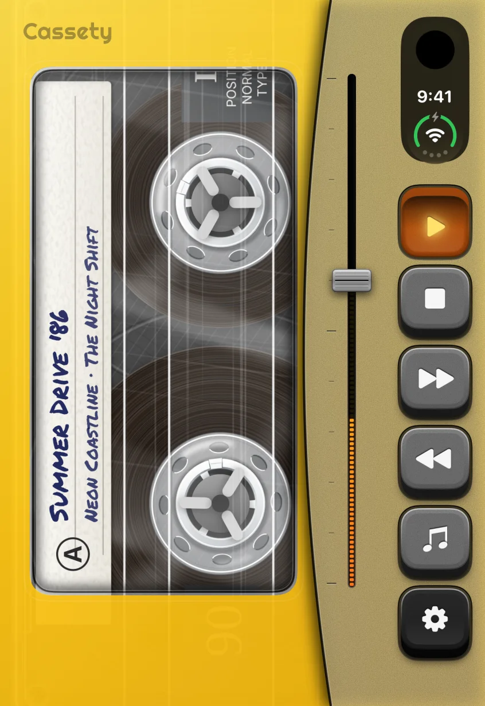

Casseti
Your music, on tape.
Casseti turns your albums and playlists into cassettes. Two sides, reels that turn, keys that clunk. When side A runs out, you flip the tape.
$4.99 one time. For iPhone. Needs an Apple Music subscription.
Casseti turns your albums and playlists into cassettes. Two sides, reels that turn, keys that clunk. When side A runs out, you flip the tape.
$4.99 one time. For iPhone. Needs an Apple Music subscription.
Not a picture of a cassette over a normal player. The tape has a length, two sides and an end.
Every album and playlist is split into side A and side B. When a side runs out the play key pops up and the music stops. Double-tap the tape to turn it over.
One reel empties as the other fills, so a glance tells you how much of the side is left. Hold rewind or fast forward and they spin up and wind the tape for real.
Play and stop are a pair: press one in and the other pops out. Every key, the door and the volume fader has its own click under your thumb.
Key clunks, the door, soft tape hiss, and the motor running down when you press stop. Turn any of it off if you prefer quiet.
Switch on Tap along and the tape deck gives a light tap in your hand on every beat while a tape plays. You choose how strong.
Every tape is labelled by hand in marker, and albums wear a label in the colours of their cover art.

Lean on a reel for a moment too long and the deck does what decks did. The music wobbles and sinks, tape spills out across the cassette, and everything stops.
Then you wind it back in, the reels spin, and you carry on. It never happens by accident. It is there because it is fun.
It works on every other iPhone too, where the player fills the screen and the library opens from the music key.


A tape deck in retro 80s, black, yellow or blue, or an MP3 player in retro 80s or black. They all play the same tapes, and the rest of the app takes on the colour you pick.




An iPhone and an Apple Music subscription. Casseti plays music from your Apple Music library and from the Apple Music catalogue, which you can browse and search inside the app.
No. Casseti is a one time purchase of $4.99. There are no adverts and no purchases inside the app. Apple Music is a separate subscription from Apple.
No. There are no accounts, no tracking and no analytics. See the privacy policy.
No. Casseti is designed around the closed and open screens of a folding iPhone, and it works on every other iPhone as well. The tape recorder is what you get when a folding one is opened.
Not at the moment. Casseti is for iPhone.
No. Casseti uses the iPhone's own playback controls on the Lock Screen.